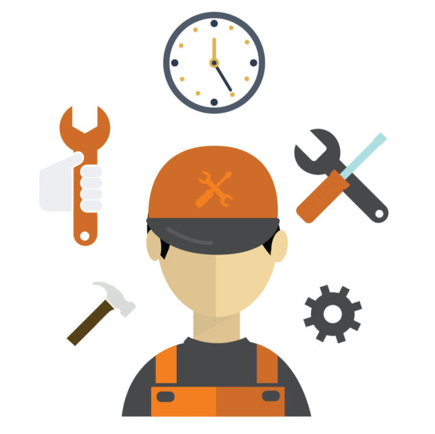
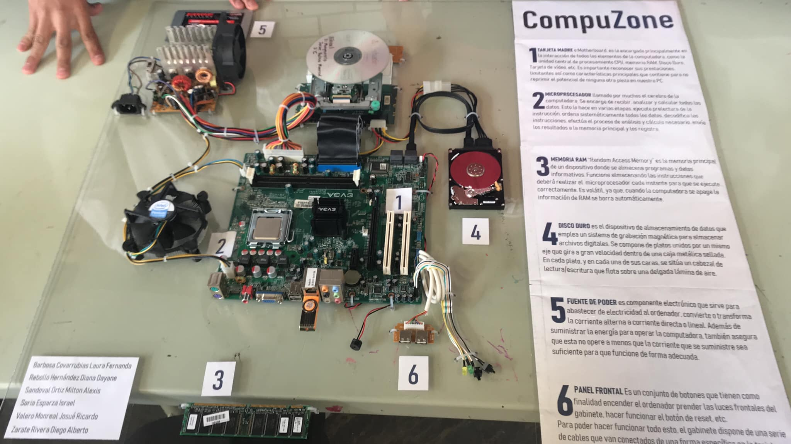

Menu Desplegable
Inicio
Descripción
Módulo I
Módulo II
Módulo III
Módulo IV
Módulo II
Hardware y comunicaciones
Proposito del Bloque
Integra Comunidades virtuales con la intención de generar la interacción del estudiantado, utilizando software social y educativo favoreciendo un ambiente de comunicación incluyente y ético dentro de su entorno personal, profesional y educativo.
Submódulo I
Comunidades virtuales
Contenido:
Comunidades virtuales
Comunidades virtuales de profesionales y de negocios
Diseño de contenidos y herramientas colaborativas
Submódulo II
Mantenimiento y redes de cómputo
Contenido:
Introducción
Partes de la computadora y periféricos
Sistemas operativos
Formateo de medios de almacenamiento e instalación de sistemas
Mantenimiento preventivo y correctivo
Red alámbrica e inalámbrica

